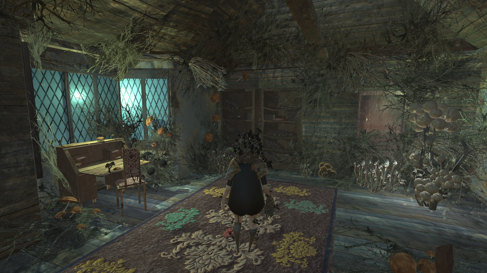
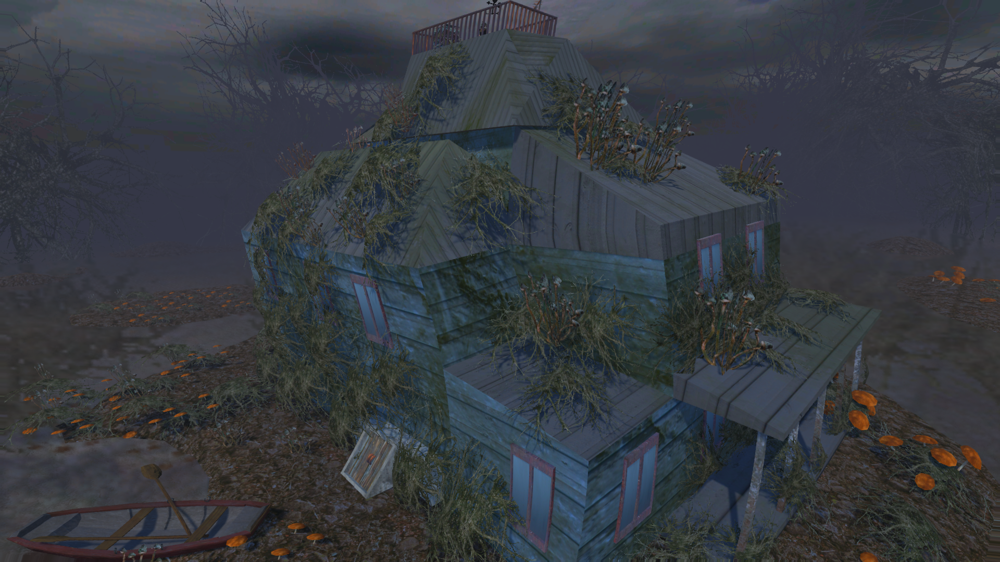
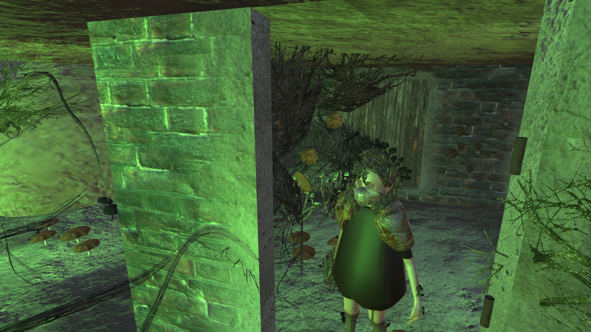

Mushroom Princess

Description
A puzzle adventure game created during a six week project in Aalto University in 2017. The player wakes up in her home, infested by mushrooms. She has to find a way to escape by solving puzzles and exploring both her house and its illusionary counterpart.
My Role
I was the only programmer in a team of five, and my main responsibilites were game design, usability and playability design, QA, puzzle design and game implementation. The game provided a useful opportunity to train team workflow practices for working with the game engine, graphic and 3D assets, and audio assets.



